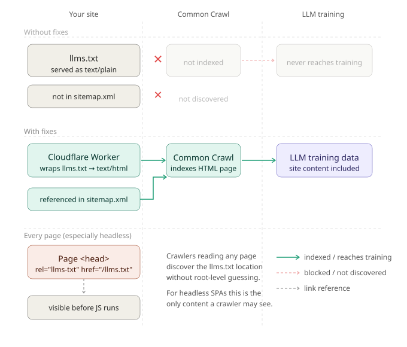

Why llms.txt Probably Isn't Working — And What to Do About It
There is a reasonable idea behind llms.txt. Proposed by Jeremy Howard in September 2024, it follows the same logic as robots.txt: place a structured file at your root, and AI systems can find a curated, structured description of your site — without needing to crawl every page to piece together what you do.
The proposal is sensible. The execution, for most sites, is broken in two specific ways that are easy to miss and easy to fix.

llms.txt reaches LLM training data — serve as text/html and reference it in sitemap.xml.The Two Problems Nobody Mentions
A common assumption is that llms.txt is useful at inference time — that is, when an AI agent is actively retrieving information to answer a query. That is largely not the case. Agents operating at inference time follow their own retrieval logic; they are not scanning your root directory for an llms.txt file on each request.
Where llms.txt does have genuine value is in training data. A richer, curated description of your site's content and structure is more useful to a training pipeline than a bare sitemap — it can provide context, intent, and relationships between pages that a crawler would otherwise have to infer. But that value only materialises if the file actually gets into training data, and this is where most implementations fail.
Problem one — it is not served as HTML
Common Crawl, which underpins the training datasets of most large language models, indexes HTML pages. Your web server will serve llms.txt with a Content-Type: text/plain header by default. Common Crawl will not treat that as an HTML page, and it will not be indexed as one.
The fix is to wrap the content in a minimal HTML document and serve it with Content-Type: text/html. On Cloudflare, a Worker handles this cleanly for the one URL that needs it:
export default {
async fetch(request) {
const url = new URL(request.url);
if (url.pathname === '/llms.txt') {
const content = await fetch('https://your-origin.com/llms.txt')
.then(r => r.text());
const html = `<!DOCTYPE html>
<html lang="en">
<head>
<meta charset="UTF-8">
<title>llms.txt</title>
</head>
<body>
<pre>${content}</pre>
</body>
</html>`;
return new Response(html, {
headers: { 'Content-Type': 'text/html; charset=utf-8' }
});
}
return fetch(request);
}
};To make the difference concrete, here is a real llms.txt — the one we use for allabout.network — as it sits on the server before any wrapping:
# allabout.network — CogNovaMX Ltd
> Making the web work for everyone and everything that uses it.
> MX (Machine Experience) is structured metadata that makes your content
> readable by every AI agent on earth — without making it less readable by humans.
## About CogNovaMX
- Company: https://mx.allabout.network/
- Author: https://www.linkedin.com/in/tom-cranstoun/
- Contact: mailto:info@cognovamx.com
- Website: https://allabout.network
CogNovaMX Ltd works on Machine Experience (MX) methodology. Founded by Tom Cranstoun —
content management specialist since 2001, conference speaker, and author of the MX book
series. We help organisations design websites that work for both humans and AI agents.
## Services
- MX Readiness Assessment: Structured audit against MX principles — structured data,
accessibility, agent interaction testing, competitive benchmarking
- Implementation Support: Schema.org implementation, accessibility fixes, explicit intent
patterns, code reviews, knowledge transfer
- Team Training: Fundamentals workshops, technical deep-dives, role-specific training for
developers, designers, content authors, QA, and leadership
- Strategic Advisory: Monthly strategy sessions, architecture reviews, competitive
intelligence, quarterly roadmap planning
## Docs
- [MX Books](https://mx.allabout.network/books/): The MX book series.
- [MX Community](https://tg.community/): The Gathering — open MX standards body.
## Optional
- [Blog](https://allabout.network/blogs/ddt/): Articles on MX, CMS, and AI readiness.This is what an LLM training pipeline needs to understand who we are, what we do, and where to find more. It describes services in plain terms, links to substantive content, and gives enough context that an AI system encountering it during training can form an accurate picture of the organisation — without needing to crawl dozens of pages. That is the point of the format: curated signal, not bulk content.
And here is the same content after HTML wrapping, as Common Crawl will see it:
<!DOCTYPE html>
<html lang="en">
<head>
<meta charset="UTF-8">
<title>llms.txt — allabout.network</title>
</head>
<body>
<pre>
# allabout.network — CogNovaMX Ltd
> Making the web work for everyone and everything that uses it.
> MX (Machine Experience) is structured metadata that makes your content
> readable by every AI agent on earth.
## About CogNovaMX
…
</pre>
</body>
</html>The content is identical. The wrapper is minimal. The difference is that crawlers will now index it.
What this site actually deploys
The snippet above is the minimum viable version — enough to make Common Crawl treat your llms.txt as HTML. The Worker that runs in front of allabout.network, mx.allabout.network, content.allabout.network and reginald.allabout.network goes a few steps further, because if we are going to wrap the file in HTML at all, we may as well make it carry the metadata that crawlers and AI agents already know how to read.
Here is the actual pure helper running on this domain. You can verify it for yourself: visit https://mx.allabout.network/llms.txt in a browser, use View Source, and compare it to the function below.
// Wrap raw llms.txt content as a minimal HTML document so Common Crawl
// (which only ingests HTML) can index the content. Preserves the original
// text verbatim inside <pre>; no transformation of the text body.
//
// Pure function — testable in Node without the Workers runtime.
export const wrapLlmsTxtAsHtml = (text, requestUrl) => {
const safe = (text || '')
.replace(/&/g, '&')
.replace(/</g, '<')
.replace(/>/g, '>');
// Title: first "# heading" line if present, else hostname-based fallback
const firstHeading = (text || '').split('\n').find((l) => l.startsWith('# '));
let host = '';
let canonical = '';
try {
const u = new URL(requestUrl);
host = u.hostname;
// Strip query string and fragment — canonical should be the bare resource URL
u.search = '';
u.hash = '';
canonical = u.toString();
} catch (_) {
// requestUrl is optional — tests may call without one
}
const title = firstHeading
? firstHeading.replace(/^#\s+/, '').trim()
: `llms.txt${host ? ` — ${host}` : ''}`;
const jsonLdObj = {
'@context': 'https://schema.org',
'@type': 'WebPage',
name: title,
description: 'Agent directory file (llms.txt) served as HTML for crawler ingestion.',
inLanguage: 'en-GB',
};
if (canonical) jsonLdObj.url = canonical;
const jsonLd = JSON.stringify(jsonLdObj);
const canonicalTag = canonical ? `<link rel="canonical" href="${canonical}">\n` : '';
const descHost = host || 'this site';
return `<!DOCTYPE html>
<html lang="en-GB">
<head>
<meta charset="utf-8">
<meta name="viewport" content="width=device-width, initial-scale=1">
<title>${title}</title>
<meta name="description" content="Agent directory file for ${descHost} — published as HTML so AI training crawlers can ingest it.">
<meta name="robots" content="index, follow">
<meta name="mx:status" content="active">
<meta name="mx:contentType" content="agent-directory">
<meta name="mx:audience" content="machines, humans">
${canonicalTag}<script type="application/ld+json">${jsonLd}</script>
<style>body{font:14px/1.5 ui-monospace,Menlo,Consolas,monospace;max-width:80ch;margin:2rem auto;padding:0 1rem;color:#1a1a1a}pre.llms-txt{white-space:pre-wrap;word-wrap:break-word}</style>
</head>
<body>
<main>
<pre class="llms-txt">${safe}</pre>
</main>
</body>
</html>`;
};The differences from the minimum viable snippet are deliberate, and each one earns its place:
- HTML escaping — the raw
llms.txtmay legitimately contain<,>, or&. Inserting that into a template without escaping would corrupt the document and, in the worst case, smuggle markup into the page. The minimum-viable snippet skips this for clarity; production cannot. - Title from the first
#heading — most well-formedllms.txtfiles start with a heading like# allabout.network — CogNovaMX Ltd. Promoting it to<title>gives crawlers and humans a real page title for free, with a sensiblellms.txt — {hostname}fallback if there is no heading. <link rel="canonical">— tells crawlers that the bare.txtURL is the canonical address for this content, so the HTML wrapping is treated as a presentation of the same resource rather than a separate page that competes with itself. Query strings and fragments are stripped so cache-busters do not pollute the canonical.<meta name="robots" content="index, follow">— explicit indexing permission. The point of the exercise is to be indexed, so we say so.- MX governance metadata — three carrier tags (
mx:status,mx:contentType=agent-directory,mx:audience=machines, humans) tell MX-aware tooling that this is a live agent directory intended for both audiences, not a general-purpose page. This is the same pattern every other MX page on the site uses. - Schema.org JSON-LD — a small
WebPageblock. Schema.org is the structured-data vocabulary every major training pipeline already understands. Adding it costs nothing and gives the wrapped file a structured identity. - Inline minimal CSS — readable in browsers without depending on any external stylesheet. The wrapped
llms.txtstays self-contained even if the rest of the site is unreachable. - Pure-function shape — the helper takes a string and a URL, returns a string. No
HTMLRewriter, no Workers-runtime APIs in the body. This means it can be unit-tested in Node without spinning up a Worker — and on this codebase it is, with thirteen tests covering the title extraction, canonical stripping, escaping, fallbacks, and verbatim preservation.
The Worker calls this function from two places — once in the path that handles mx.allabout.network / content.allabout.network / reginald.allabout.network, and once in the path that handles allabout.network itself. Both call sites use a basename match (filename === 'llms.txt' or endsWith('/llms.txt')), so the wrapping fires automatically for any llms.txt at any depth — root /llms.txt, /blog/llms.txt, /services/llms.txt, anywhere. None of the source .txt files are modified. The HTML view exists only at serve time.
Problem two — it is not in sitemap.xml
If your llms.txt is not referenced in your sitemap, crawlers have no reliable signal that it exists. It will not be systematically discovered, which means it will not make it into Common Crawl, and therefore not into LLM training.
Fix both of those things — serve llms.txt as an HTML page, and include it in your sitemap — and it has a reasonable chance of being included. These are not technical challenges. They are configuration decisions that most teams simply do not make, because the guidance around llms.txt rarely addresses training pipelines.
What MX Practice Says About This
MX — Machine Experience — is a discipline concerned with how digital content is read, interpreted, and used by machines: AI agents, search indexers, voice assistants, training pipelines, and browser automation. Where web accessibility asks how we make content usable for people with disabilities, MX asks the same question about non-human readers. The two turn out to share most of the same answers. You can read more in the MX book series.
From an MX perspective, the llms.txt situation is a familiar pattern. The principle that guides MX work is straightforward: if you want machines to read your content reliably, you cannot depend on them inferring what you intended. You have to make the structure explicit, using mechanisms that machine readers already understand.
llms.txt in its current common form asks AI systems to discover and interpret a relatively new standard. But most AI systems being trained right now have knowledge cutoffs that predate the proposal entirely. The standard is invisible to the very systems it is designed to inform.
This is not an argument against llms.txt. It is an argument for implementing it in a way that works with existing infrastructure rather than waiting for new infrastructure to catch up. That is, in fact, one of the core principles of MX: do not reinvent — reuse existing patterns. Crawlers already understand HTML. Sitemaps already signal what matters. Use what is already there.
The HTML meta tag approach does exactly that. Rather than relying on a crawler to find and correctly handle a markdown file, you embed the key information in the HTML that crawlers already process — on every page that matters. Add a link tag pointing to your llms.txt, alongside a meta description, in the <head> of every page:
<link rel="llms-txt" href="/llms.txt">
<meta name="llms-txt-description" content="A description of your site and its content.">The link tag tells any agent or crawler that encounters the page exactly where to find the llms.txt file — no guessing, no root discovery required. For sites where content is concise enough, the full content can also go directly into the page as a meta tag:
<meta name="llms-txt-content" content="# Your Site > Description...">No new standard needs to be adopted. No new crawler behaviour needs to be assumed. The structural information is present in the HTML itself, where crawlers have always looked.
A Note on Headless and JavaScript-Rendered Sites
If the above matters for conventional sites, it matters more for headless and JavaScript-rendered ones — and this is where llms.txt, done correctly, becomes particularly useful.
Headless CMSs — Contentful, Sanity, Hygraph, and similar — deliver content through APIs to a frontend that renders it in JavaScript. When an AI scraper visits the resulting site, it typically sees something like this:
<body>
<noscript>You need to enable JavaScript to run this app.</noscript>
<div id="root"></div>
</body>No content. Just a shell. The scraper cannot see the products, articles, or services the site exists to describe. The link tag and meta description approach is especially useful here because they sit in the <head> — the part of the page that is served before JavaScript runs, and the only part most crawlers will ever see. You are not waiting for the JavaScript to execute; the reference to llms.txt is already in the response.
The Checklist
If you are implementing llms.txt — for any kind of site — the steps are:
- Serve the file as
text/html— use a Cloudflare Worker (or equivalent edge function) to wrap the content and set the correct header. - Add it to
sitemap.xml. - Add
<link rel="llms-txt" href="/llms.txt">to the<head>of every page — especially important for headless sites where the page body may be empty until JavaScript runs.
Readable by Both Means Readable by Both
MX does not treat machine readability as a separate track from human readability. The same content, properly structured, should work for both. llms.txt is consistent with that principle — but only when it is implemented in a way that puts it in front of the systems that matter.
Right now, most llms.txt files are well-intentioned but structurally invisible. They are not in sitemaps. They are not served as HTML. They will not appear in Common Crawl. They will not reach LLM training data.
The fix is straightforward. But it does require understanding what llms.txt is actually for — and that starts with being honest about where it currently falls short.
Related reading
- Agent Discoverability: What Your Site Is Missing — diagnose the signals AI agents look for
- What Is Machine Experience? — the discipline behind these patterns
- Machine Experience: Adding Metadata — the 5-stage agent journey
- MX: A New Role — audit data and the convergence principle
Tom Cranstoun is the founder of the Machine Experience (MX) community and author of the MX book series. He consults on MX strategy through Digital Domain Technologies Ltd, trading as CogNovaMX.